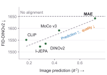
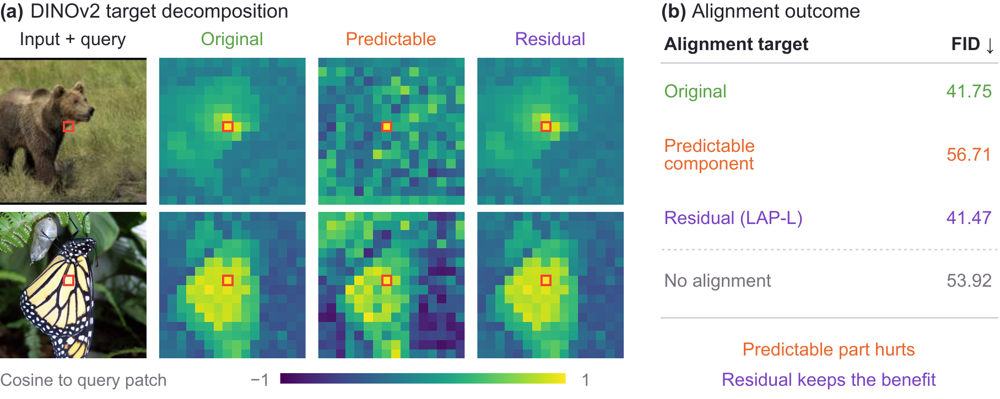
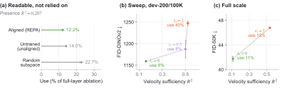
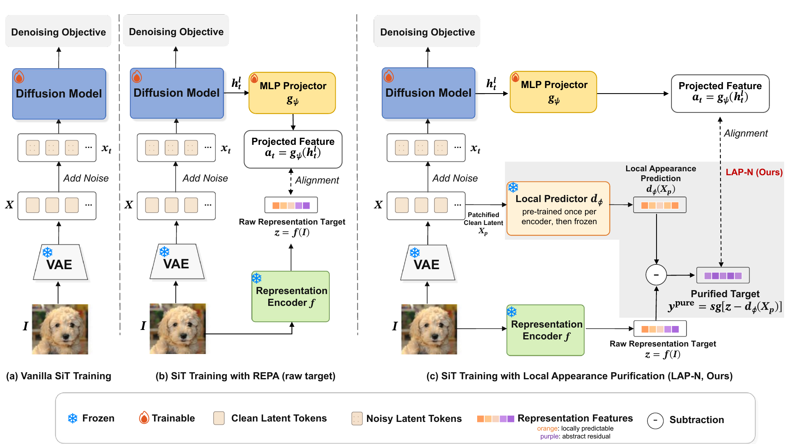
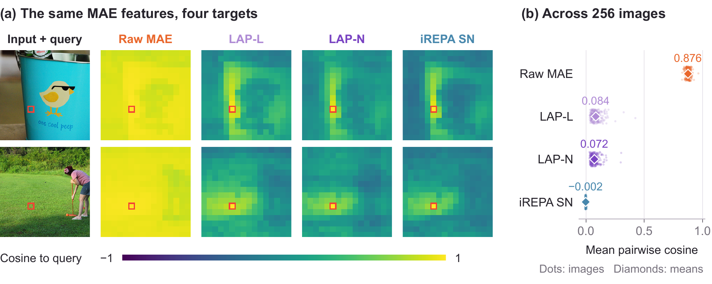
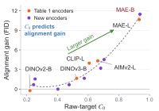
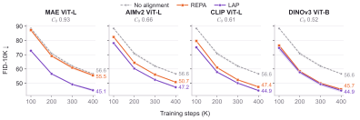

Representation alignment improves and accelerates diffusion training by encouraging intermediate features to match a pretrained visual encoder. Yet choosing the right encoder remains largely empirical: DINOv2 provides substantial improvements, whereas MAE, despite retaining more reconstructive information, offers smaller gains. We introduce local appearance purification (LAP), which improves generation quality and makes encoders such as MAE more effective alignment targets by removing locally predictable content and aligning to the residual. LAP modifies only the alignment target, and requires no changes to diffusion training or inference. Through controlled interventions within a fixed encoder, we show that effective alignment depends on what information the target emphasizes, not simply how much image information it contains. Our theory gives a variational interpretation of standard alignment and, for fixed local predictors, a sum of token-wise information bounds conditioned on local appearance. We further derive an exact constant-readout baseline that measures how well the target can be matched without using the diffusion model's hidden state. LAP improves generation quality across five pretrained representations (MAE, AIMv2, CLIP, DINOv2, DINOv3), with the largest gain for MAE: on ImageNet-256 with SiT-B/2, it reduces FID from 53.1 to 42.3. Its gains persist with stronger alignment recipes and tokenizers. Computed before diffusion training, the constant-readout score predicts the benefit of purification (Spearman \(\rho=0.94\) across 13 encoders at 100K steps).
REPA trains a diffusion transformer to match, through a small projector, the features of a frozen pretrained encoder. Which encoder to use is still mostly an empirical choice, and MAE is the sharpest puzzle: diffusion models learn to reconstruct clean images, and MAE features predict clean-image content far better than DINOv2. Yet across five encoders, better clean-image prediction generally accompanies worse generation, and MAE gives the smallest gain.

What information should an alignment target ask the denoiser to match?
A comparison across encoders cannot isolate the cause, since architecture, data and objective all change together. We therefore hold DINOv2 fixed and split each target token into the part an affine map can predict from the co-located clean-latent patch, and the residual. The predictable part is tiny (rank at most 17, about 2% of the centered feature variance) and easier to match, yet aligning to it alone makes FID-50K worse than no alignment (56.71 vs. 53.92). Aligning to the residual keeps the full benefit of raw DINOv2 (41.47 vs. 41.75).

A second intervention pushes the aligned representation to predict the denoising target directly, with an auxiliary head. At full scale this raises the held-out velocity-prediction \(R^2\) from 0.11 to 0.53, but worsens FID-50K from 41.75 to 46.79. In the unmodified REPA model, DINOv2 features are readable from the hidden state, but the denoiser relies on the aligned subspace less than on rank-matched random subspaces: readable is not the same as relied on.

Takeaway. The denoising loss already supplies a strong reconstruction signal. Alignment helps most when the target emphasizes information beyond what local appearance predicts, not when it adds more reconstruction content.
In REPA, a projector \(g_\psi\) maps the hidden state \(h_t^l\) at block \(l\) to \(a_t = g_\psi(h_t^l)\), which is matched token-wise to a target \(y\) computed from the clean image:
\[ \begin{gathered} \mathcal{L} = \mathcal{L}_{\mathrm{flow}} + \lambda_a \mathcal{L}_{\mathrm{align}}, \\ \mathcal{L}_{\mathrm{align}} = -\mathbb{E}\Big[\tfrac{1}{N}\textstyle\sum_{i=1}^{N} \cos\big(a_t^{(i)}, y^{(i)}\big)\Big]. \end{gathered} \]Standard REPA uses the raw encoder output \(y = z = f(I)\). LAP fits a local predictor \(d_\phi\) from the patchified clean latent \(X_p\) to \(z\), and aligns to what it cannot predict:
\[ \begin{gathered} \mathcal{L}_{\mathrm{pred}} = \mathbb{E}\,\big\| z - d_\phi(X_p) \big\|^2, \\ y^{\mathrm{pure}} = \mathrm{sg}\big[\, z - d_\phi(X_p) \,\big]. \end{gathered} \]
LAP-L (linear). An affine map from each clean-latent patch to its target token, refit on every minibatch with no gradient through the fit. Nothing to pretrain.
LAP-N (nonlinear). A small convolutional predictor over a local \(k\times k\) neighborhood of latent patches, trained once per teacher before diffusion training and then frozen.
The predictor only defines the target: it receives no gradient from diffusion training and is discarded at sampling time. The residual is not guaranteed to be purely semantic (local patches can carry semantics, and a limited predictor will not remove everything local), so we measure its content and its effect on generation directly.
Pseudocode of the target change (see train.py for the full version)
# z: teacher tokens f(I) (B, N, D)
# Xp: patchified clean latent, one patch per token (B, N, C*p*p)
# LAP-L: per-batch affine residual
A = torch.cat([Xp, torch.ones_like(Xp[..., :1])], dim=-1).flatten(0, 1)
W = torch.linalg.lstsq(A, z.flatten(0, 1)).solution
y = z - (A @ W).view_as(z)
# LAP-N: subtract a frozen local purifier (trained once per teacher)
y = z - purifier(Xp)
loss_align = -F.cosine_similarity(projector(h), y.detach(), dim=-1).mean()Reading cosine alignment as the log-likelihood of a von Mises–Fisher decoder for each target direction, standard alignment maximizes a variational lower bound on the information the hidden state carries about the teacher. For a fixed local predictor with input neighborhood \(S_i\), LAP instead bounds a sum of token-wise information terms conditioned on local appearance:
\[ \begin{aligned} \mathcal{I}(h; z) &\;\ge\; c_\sigma - \kappa N\, \mathcal{L}^{(t)}_{\mathrm{align}}(z), \\ \textstyle\sum_{i=1}^{N} \mathcal{I}\big(h; z^{(i)} \mid S_i\big) &\;\ge\; c'_\sigma - \kappa N\, \mathcal{L}^{(t)}_{\mathrm{align}}\big(y^{\mathrm{pure}}\big). \end{aligned} \]These bounds clarify what each loss rewards; they may be loose and do not by themselves explain the generation gains. Derivations and assumptions are in the paper's appendix.
A high alignment score does not mean the hidden state is informative. If target tokens share a common direction, a readout that ignores the hidden state and always outputs the same unit vector \(\mu\) already scores well. The best such constant readout has a closed form:
\[ \begin{gathered} C_0(y) \;=\; \max_{\|\mu\|=1} \mu^\top m_y \;=\; \|m_y\|, \\ m_y = \mathbb{E}\Big[\tfrac{1}{N}\textstyle\sum_{i=1}^{N} \hat y^{(i)}\Big], \end{gathered} \]where \(\hat y^{(i)}\) is the normalized target token. \(C_0\) depends only on the target, so it can be computed before any diffusion training: normalize the tokens, average over images and positions, take the norm. Raw MAE has \(C_0 = 0.93\), close to the trained projector's cosine of 0.957, so most of its alignment score is reachable without using the hidden state. Both LAP variants bring \(C_0\) down to about 0.01–0.02.

\(C_0\) predicts which teachers benefit. Across 13 encoders under matched protocols, higher raw-target \(C_0\) goes with larger FID gains from LAP-L: Spearman \(\rho = 0.94\) at 100K steps (FID-10K) and 0.79 at 400K steps (FID-50K). Controlling for raw-target FID, the partial rank correlations remain 0.83 and 0.69.
\(C_0\) is not the whole story. For MAE, LAP-L and LAP-N reach the same near-zero \(C_0\), yet LAP-N generates better. LAP-N removes 35% of held-out target variance while preserving class information (68.7% linear-probe accuracy vs. 66.1% for raw MAE).

Class-conditional SiT-B/2 on ImageNet 256×256, 400K steps, batch 64, SD-VAE, alignment at block 8, no guidance, ADM evaluation protocol. Every number is a mean over two training seeds.
| Teacher | \(C_0\) | Method | FID ↓ | IS ↑ | Prec. ↑ | Rec. ↑ |
|---|---|---|---|---|---|---|
| No alignment | 53.92 | 25.34 | 0.435 | 0.602 | ||
| MAE ViT-L | 0.93 | REPA | 53.05 | 26.30 | 0.438 | 0.599 |
| + LAP-L | 45.15 | 31.44 | 0.480 | 0.617 | ||
| + LAP-N | 42.30 | 33.85 | 0.496 | 0.622 | ||
| AIMv2 ViT-L | 0.66 | REPA | 47.97 | 29.88 | 0.464 | 0.615 |
| + LAP-L | 44.31 | 32.67 | 0.484 | 0.622 | ||
| + LAP-N | 44.56 | 32.40 | 0.483 | 0.621 | ||
| CLIP ViT-L | 0.61 | REPA | 44.74 | 32.21 | 0.481 | 0.615 |
| + LAP-L | 42.69 | 33.91 | 0.493 | 0.621 | ||
| + LAP-N | 42.21 | 34.38 | 0.495 | 0.624 | ||
| DINOv3 ViT-B | 0.52 | REPA | 42.73 | 34.25 | 0.486 | 0.623 |
| + LAP-L | 42.07 | 34.91 | 0.490 | 0.633 | ||
| + LAP-N | 43.27 | 34.02 | 0.485 | 0.628 | ||
| DINOv2 ViT-B | 0.22 | REPA | 41.75 | 35.50 | 0.492 | 0.630 |
| + LAP-L | 41.47 | 35.53 | 0.495 | 0.621 | ||
| + LAP-N | 42.11 | 35.26 | 0.493 | 0.632 | ||
Teachers are ordered by raw-target \(C_0\). Shaded rows use LAP; bold marks the best mean per teacher and metric. The gain is largest where \(C_0\) is high: LAP-L improves mean FID by 7.9, 3.7 and 2.0 for MAE, AIMv2 and CLIP, and by 0.7 and 0.3 for DINOv3 and DINOv2, which is within seed variation.

LAP changes only the target, so it stacks with methods that change other parts of alignment: spatial operations (iREPA), the alignment schedule (VA-REPA), an entangled class token (REG), and a structural loss (sREPA).
| Recipe | MAE | MAE + LAP | DINOv2 | DINOv2 + LAP |
|---|---|---|---|---|
| iREPA | 43.06 | 41.32 | 41.32 | 40.55 |
| VA-REPA | 52.82 | 41.60 | 40.71 | 40.39 |
| REG | 52.92 | 41.65 | 29.24 | 28.67 |
| sREPA | 50.43 | 38.46 | 38.13 | 36.92 |
FID-50K. Each + LAP column uses the variant with the best two-seed mean (LAP-N for MAE; LAP-L or LAP-N for DINOv2, see the paper). Spatial operations improve MAE a lot on their own, but do not subsume purification.
| Tokenizer | No alignment | REPA (raw MAE) | + LAP-N |
|---|---|---|---|
| SD-VAE | 53.92 | 53.05 | 42.30 |
| EQ-VAE | 52.50 | 52.41 | 40.01 |
| REPA-E VAE | 32.30 | 33.74 | 27.56 |
FID-50K, MAE ViT-L teacher, released tokenizers kept frozen. With the REPA-E VAE, raw MAE is worse than no alignment, while LAP turns it into a clear gain.
| Model | Batch | Unaligned | Raw MAE | LAP-N (MAE) | REPA (DINOv2) | LAP-L (DINOv2) |
|---|---|---|---|---|---|---|
| SiT-B/2 | 256 | 36.54 | 34.72 | 28.57 | 27.67 | 27.58 |
| SiT-L/2 | 256 | 20.14 | 16.05 | 11.97 | 10.01 | 9.78 |
| SiT-XL/2 | 256 | 17.86 | 13.65 | 9.67 | 8.10 | 7.76 |
FID-50K without guidance, 400K steps. LAP-N keeps improving MAE at scale, though a gap to DINOv2 REPA remains; LAP-L on DINOv2 gives the lowest FID in every row. With classifier-free guidance, see the paper's appendix.
Beyond ImageNet. On the aerial-scene datasets RESISC45 and AID, LAP with MAE gives the best FID, improving over DINOv2-based REPA by 4.9 and 3.6 FID. On AID neither raw MAE nor raw DINOv2 beats no alignment, while purified MAE does.
Uncurated samples from the 400K-step EMA checkpoints. In each column, every row shares the class label and the sampling noise, so differences come from the alignment target alone. The eight classes were fixed in advance.
The repository covers LAP-L, LAP-N and purifier training, the REPA baselines and compositions, the \(C_0\) score and hidden-state probes, and one-command recipes for every experiment in the paper. Five SiT-B/2 checkpoints and all 12 purifiers are on Hugging Face.
git clone https://github.com/isjakewong/LAP && cd LAP
pip install -r requirements.txt # plus OpenAI CLIP, see the README
python scripts/download_checkpoints.py --output checkpoints
python sample.py --ckpt checkpoints/diffusion/in1k_mae_lapk5_s1.pt --out samples/mae_lapn
python reproduce.py train in1k_mae_lapk5 # MAE + LAP-N, as in the paper@article{wang2026purify,
title = {Purify Before You Align: Improving Representation Alignment for Diffusion Models},
author = {Wang, Yingheng and Li, Yaoqiang and Wu, Yaqin and Bai, Junwen and Gu, Jiatao and De Sa, Christopher and Kuleshov, Volodymyr},
journal = {arXiv preprint},
year = {2026}
}